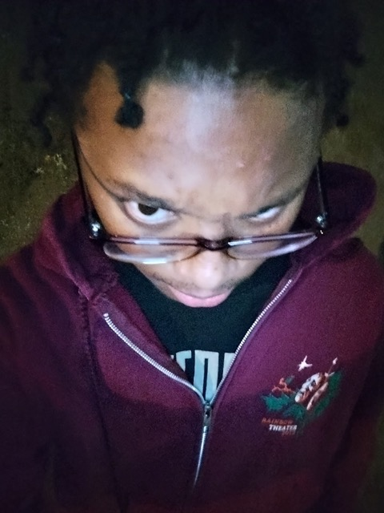

My name is Michael, Im a AGPM major at UCSC, I hail form the city of San Francisco and have lived there my whole life until I started collage. Recently I have found an anomoly that looks, sounds and seems to be just like me, its horrifyng, a duplacate in the natrual air. I first ran into this 6 years ago, I was fourteen and useing my newfound highschool freedom to explore the city without needing much premission from my parents. It was about 6pm and I was skateing alone in the neighborhood I grew up in, Potrero Hill, its a hilly place, I was too scared to ride down most so I was mainly walking around Watchman Way and the nearby Rec-Cetner. As I passed by a the more nature filled area next to the park I saw something uncanny, it looked like me in every way, peeling from the shadows of the trees it acted just how I belived myself to act and it freacked, me, out!
